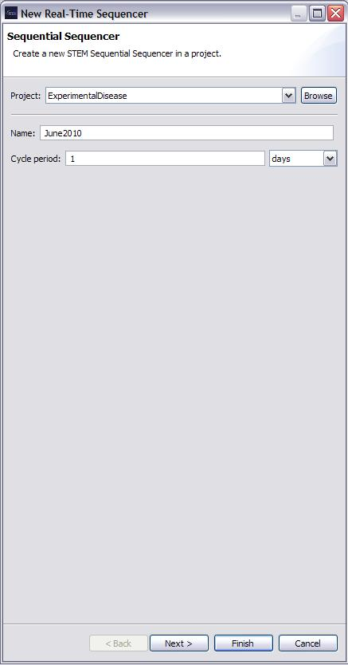
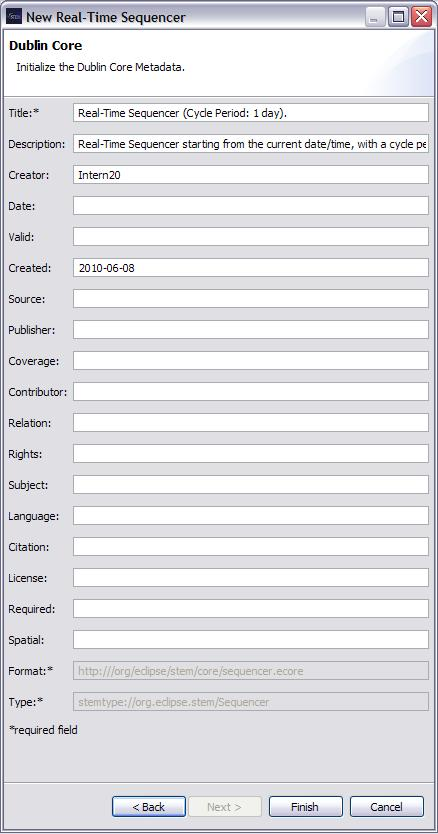

The New Real-Time Sequencer Wizard is used to create and define the properties of a new Real-Time Sequencer. A name must be provided for the Real-Time Sequencer in order to be able to click "Next" or "Finish". The Cycle Period can be altered by changing the length of the period in absolute numbers or the units of measurement.
 